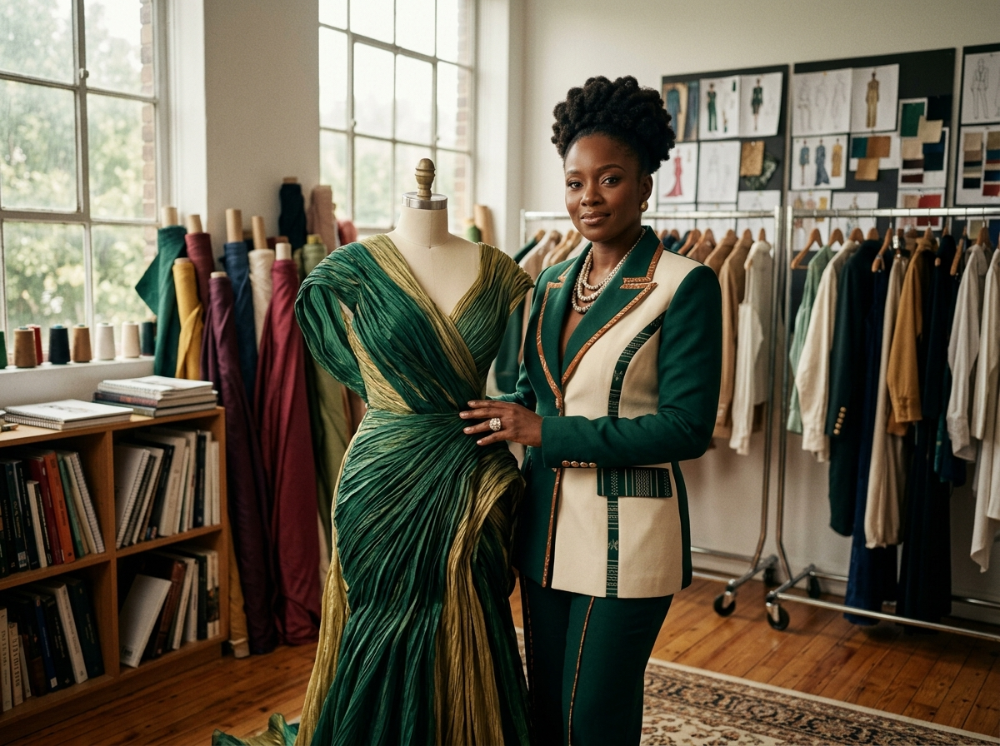
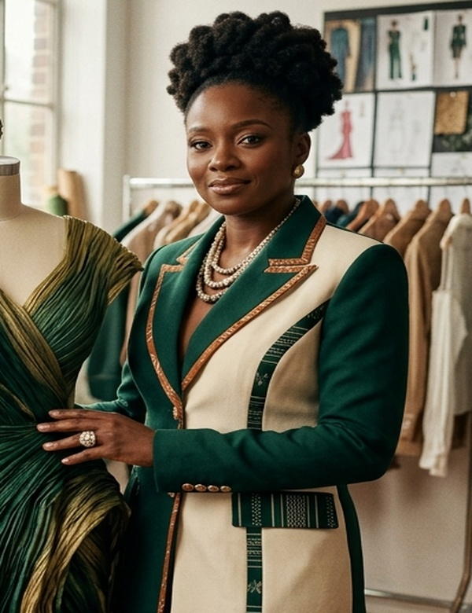
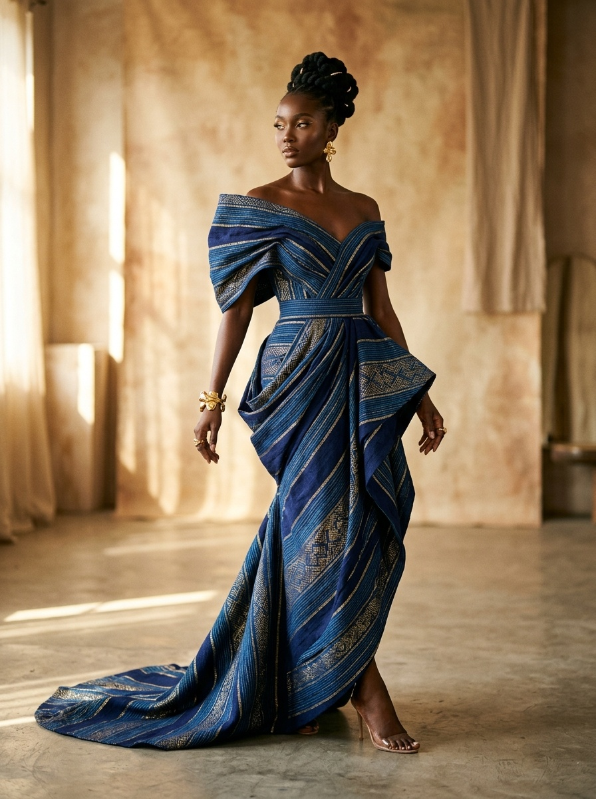
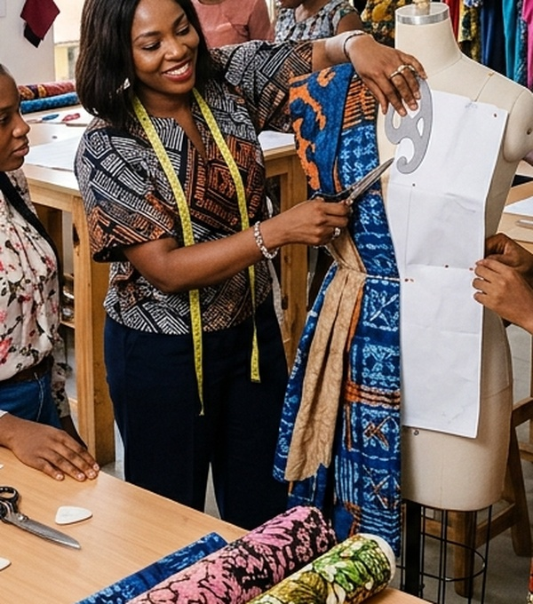
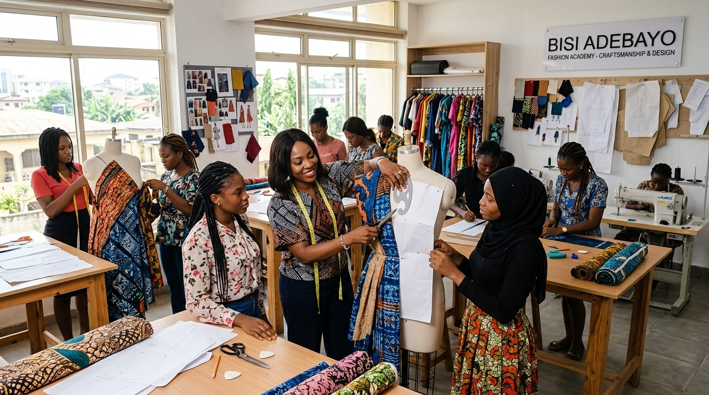

Founded by Deborah Enemeri, Systeme Couture engineers bespoke corporate apparel and high-fashion silhouettes that weave authentic Nigerian textiles—including traditional Ukponoru and Ikele—into contemporary wardrobing for modern leaders worldwide.

Lead Creative Director
Structural garment analysis tailored to provide flawless posture, executive comfort, and workplace presence.
Reclaiming traditional Nigerian handweaves (Ukponoru, Ikele, elevated Ankara) into modern luxury design.
Production offcuts are systematically upcycled into luxury trims, artisanal accessories, and social programs.
Direct economic partnership with regional craftswomen in Benin City, fostering micro-enterprise sustainability.

Senior Creative Director, Fashion Theorist & Sustainable Supply Chain Architect
Deborah Enemeri is a pioneering Nigerian fashion entrepreneur whose work harmonizes technical pattern drafting with cultural preservation. Holding an MSc in International Business Management from the University of Sunderland (UK) and a B.Sc in Business Administration from Ambrose Alli University, she combines rigorous operational acumen with refined bespoke mastery.
Through Systeme Couture, Deborah has reimagined female executive power dressing. By integrating ancestral textiles such as Edo State’s revered Ukponoru and Ikele into razor-sharp silhouettes, she equips women leaders with apparel that commands boardrooms while championing ethical, indigenous craftsmanship.
Each bespoke piece is precision-drafted in our atelier to achieve ergonomic comfort, structural excellence, and timeless prestige.
Engineered for female executives. Hand-cut virgin wool blend with hand-loomed Nigerian Ukponoru textile lapel architecture and ergonomic shoulder contours.

Heritage CoutureA tribute to ancestral Nigerian textile heritage. Sculptural hand-draped evening gown featuring authentic woven Edo Ikele fabric laced with metallic gold fibers.

Atelier SeriesArtisanal ready-to-wear crafted through mathematical zero-waste pattern drafting, elevating print geometry with modular styling for everyday elegance.
Every garment constructed by Systeme Couture undergoes an exacting 5-stage bespoke engineering process.
Comprehensive client profile assessment, structural posture analysis, and lifestyle wardrobe curation.
Direct curation of certified handwoven African textiles, raw silks, and sustainable luxury fibers.
Precision flat pattern making and CLO 3D simulation ensuring zero material loss and flawless balance.
Toile canvas fittings, structural interlinings, hand-stitched pick lapels, and custom embellishment.
Micro-level finish verification, steam preservation packaging, and lifetime wardrobe alteration support.
True luxury is ethical. Deborah Enemeri established Systeme Couture with a mission to eliminate textile waste and create sustainable livelihoods for young Nigerian women and craftspeople.
Conducted hands-on garment drafting and tailoring workshops in Benin City, training over 200 young women to build self-sustaining micro-enterprises.
Upcycling 100% of production offcuts into luxury accessories, buttons, and utility items, diverting metric tons of textile waste from regional landfills.
Directly supporting indigenous textile weavers across southern Nigeria with guaranteed living wages and long-term order commitments.

Advancing SDG 8 (Decent Work) & SDG 12 (Responsible Consumption)
A rare combination of academic rigor, master-level fashion certification, and enterprise leadership.
University of Sunderland, United Kingdom
Ambrose Alli University, Nigeria
Rhoda Michaels Fashion Institute (RMFI)
Garment Making, Structural Tailoring & Fashion Design
Systeme Couture (Nigeria & UK Operations)
Adaberrys Signature (Oredo, Benin City)
Mfab Stitches Collections (Benin City)
Whether you are commissioning a single bespoke executive suit, planning a signature couture gown, or seeking a sustainable design masterclass collaboration, our atelier is ready to bring your vision to life.
Thank you. Our atelier manager will contact you within 24 hours.